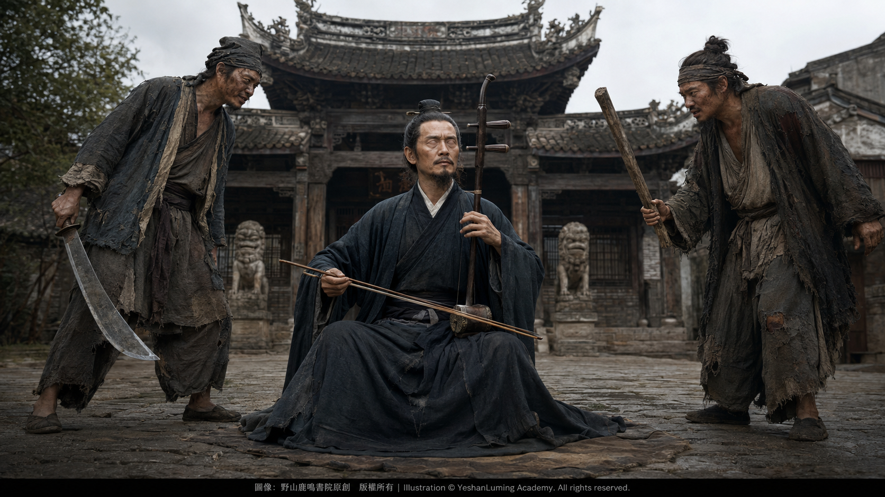

從天堂到地獄·阿炳的賣藝生涯From Heaven into Hell · Abing’s Years as a Street Performer
China’s Beethoven · Blind Musician AbingFrom Heaven into Hell · Abing’s Years as a Street Performer
China’s Beethoven · Blind Musician Abing從天堂到地獄·阿炳的賣藝生涯
中國的貝多芬·瞎子阿炳
中國的貝多芬·瞎子阿炳（105）China’s Beethoven · Blind Musician Abing (105)
在中國近代音樂史上，瞎子阿炳——華彥鈞留下的傳世二胡名曲《二泉映月》，是一首幾乎無人不知、無人不曉的世界級名曲。世人多知道他是一位天才的民間音樂大師，卻鮮少有人知道，在他用一首二胡曲震撼世界之前，曾經歷過一場從「天堂到地獄」的人生巨變。
從體面的雷尊殿當家道士，到流落街頭賣藝為生，他的人生不僅是一部與貧困抗爭的血淚史，更是一場在黑暗與屈辱中不甘沉淪、在地獄中努力保持尊嚴的艱苦奮鬥。
在三十多歲以前，沒有人會想到他會如此迅速地「落魄」。
他是無錫城內著名道觀雷尊殿的當家道士。早年的他年輕有為，在師父——也是父親——華清和的嚴格訓練下，練就了吹、打、彈、拉樣樣精通的絕活，在無錫當地的齋醮法事中名噪一時，成為人人讚羨的「小天師」「華當家」。
那時的他，過著衣食無憂、受人敬重的優渥生活。他常與地方名流交往，生活可謂風流倜儻。此時的阿炳，仿佛生活在「天堂」之中，未曾料到命運的黑洞正在前方悄然等待著他。
他的人生在三十多歲時陡然轉折。由於放蕩生活與疾病的折磨，阿炳雙目失明。緊接著，道觀易手，失去經濟來源與社會地位的他，瞬間從受人敬重的「小天師」「華當家」，變成了一個無依無靠的盲人。
為了生存，阿炳只能背起三弦、提著二胡，走上街頭賣藝謀生。從昔日坐在高堂之上、受人敬奉的當家道士，變成在塵土飛揚的街頭拉琴謀生的盲人藝人；從天堂墜入地獄，這種巨大的心理落差，沒有親身經歷過的人是難以想像的。
在中國近代音樂史上，瞎子阿炳——華彥鈞留下的傳世二胡名曲《二泉映月》，是一首幾乎無人不知、無人不曉的世界級名曲。世人多知道他是一位天才的民間音樂大師，卻鮮少有人知道，在他用一首二胡曲震撼世界之前，曾經歷過一場從「天堂到地獄」的人生巨變。
從體面的雷尊殿當家道士，到流落街頭賣藝為生，他的人生不僅是一部與貧困抗爭的血淚史，更是一場在黑暗與屈辱中不甘沉淪、在地獄中努力保持尊嚴的艱苦奮鬥。
在三十多歲以前，沒有人會想到他會如此迅速地「落魄」。
他是無錫城內著名道觀雷尊殿的當家道士。早年的他年輕有為，在師父——也是父親——華清和的嚴格訓練下，練就了吹、打、彈、拉樣樣精通的絕活，在無錫當地的齋醮法事中名噪一時，成為人人讚羨的「小天師」「華當家」。
那時的他，過著衣食無憂、受人敬重的優渥生活。他常與地方名流交往，生活可謂風流倜儻。此時的阿炳，仿佛生活在「天堂」之中，未曾料到命運的黑洞正在前方悄然等待著他。
他的人生在三十多歲時陡然轉折。由於放蕩生活與疾病的折磨，阿炳雙目失明。緊接著，道觀易手，失去經濟來源與社會地位的他，瞬間從受人敬重的「小天師」「華當家」，變成了一個無依無靠的盲人。
為了生存，阿炳只能背起三弦、提著二胡，走上街頭賣藝謀生。從昔日坐在高堂之上、受人敬奉的當家道士，變成在塵土飛揚的街頭拉琴謀生的盲人藝人；從天堂墜入地獄，這種巨大的心理落差，沒有親身經歷過的人是難以想像的。
雙眼失明帶來的恐懼、街頭的冷酷、世態的炎涼，以及路人的冷眼與淡漠，將他原來的自尊徹底擊碎。昔日的許多「朋友」也都離他而去，對他避之唯恐不及。
即便阿炳迫不得已放下身段，走上街頭賣藝求生，現實的殘酷仍是他始料未及的。真正的「地獄」生活，比他想像的更加殘酷。
當時的無錫城街頭並非可以任人自由賣藝的地方。許多街頭巷尾，都受到當地不同行會和江湖勢力的控制，其中也包括丐幫。
關於阿炳最初走上街頭賣藝的經歷，無錫地方還流傳著一段他與丐幫發生衝突的故事。這段往事的具體細節，如今已經難以完全考證，但它所反映的，正是當年街頭藝人生存環境的艱難。
據說，阿炳第一次走上街頭賣藝時，不明就裡，剛開始拉二胡，便遭到丐幫頭目手下的刁難。他們告訴阿炳，想要在這條街上討飯，就必須先拜在丐幫老大門下當徒弟，並且按期繳納規費，否則就滾出這個地盤。
面對地痞無賴的圍攻與威脅，雙目失明的阿炳據理力爭。他說自己不是乞討，而是憑藉琴藝賣藝求生；他是一名道士，也是曾經的雷尊殿掌門人，怎肯拜丐幫老大為師？
可是，那些前來搗亂的丐幫之人哪裡肯聽他的辯解。他們欺負阿炳雙目失明、無力反抗，不但將他痛打了一頓，還砸壞了他的琵琶和二胡。

Click to enlarge
瞎子阿炳賣藝不成，反被人毆打的事情，很快便傳遍了無錫城。有人看他的笑話，嘲笑他咎由自取；也有人同情阿炳，認為丐幫欺人太甚。
幸運的是，阿炳雖然落魄，但他出眾的琴藝和昔日雷尊殿掌門道士的身份，仍讓一些同情他的人為之動容。
按照這一地方傳說，後來，一位名叫薛福瑞、在地方上頗有影響力的熟人出面斡旋。據說薛福瑞與青幫和警界都有一定聯繫，是當時無錫地方上的一位頭面人物。
他向丐幫老大表明：阿炳是我的朋友。他現在雖然落難，但仍然是「憑本事吃飯」，與沿街乞討的普通乞丐不同，你們丐幫不能欺負他。
其他江湖勢力也參與進來，從中調解和通融。丐幫這才罷手，允許阿炳在無錫崇安寺一帶擺攤賣藝。
這段與丐幫發生衝突的經歷，激發了阿炳骨子裡的清高與傲氣。為了將自己與普通乞丐區分開來，在此後近二十年的街頭賣藝生涯中，他一直堅持自己的道士身份。外出賣藝時，他始終頭挽道髻、身穿道袍，以此宣示自己雖然落魄，卻不是一名沿街乞討的乞丐。
阿炳認為，自己不是乞討，而是賣藝。因此，他不願直接伸手接受聽眾的施捨，而是在胡琴上掛一面小鑼，賣藝時放在地上， 或者在身邊放置一個竹籮，讓看客將銅子兒投入其中。
在他看來，這是一場公平的交易：
我賣藝，你付錢。
他從不乞求別人的憐憫。他不是在乞討，而是在以自己的琴藝和勞動，換取應得的報酬。在地獄之中，在萬般無奈之下，他仍然竭力保持著自己最後的尊嚴。
無錫的街頭成了他的舞台，也成了他的戰場。
正是在崇安寺一帶的風雨中，在長年忍受貧困、欺凌與路人白眼的「地獄」生活裡，阿炳將一生的憤懣、不屈與悲涼，全數傾注進那把破舊的二胡，傾注在他拉出的每一個音符之中。
那首後來震撼世界的《二泉映月》，並非由高雅音樂殿堂中的安逸生活孕育而成，而是在阿炳從天堂墜入地獄、於貧困與屈辱中艱難求生的漫長賣藝歲月裡，逐漸醞釀、磨礪和定型。
琴聲中壓抑的哭訴與激越的反抗，正是華彥鈞對苦難命運的回答，也是他對那個殘酷人間最深沉的控訴。
（未完待續）
In the history of modern Chinese music, The Moon Reflected on the Second Spring, the immortal erhu masterpiece left to the world by Blind Abing—Hua Yanjun—is known to virtually everyone. Most people know that he was a musical genius and a master of Chinese folk music. Yet few know that before he shook the world with a single erhu composition, his life had undergone a devastating transformation—from “heaven into hell.”
From the respected head Taoist priest of Leizun Temple to a destitute street performer struggling to survive, his life became more than a story written in blood and tears—a battle against poverty. It was also an arduous struggle against degradation amid darkness and humiliation, an unyielding effort to preserve his dignity even in hell.
Before he reached his thirties, no one could have imagined that his fall would come so swiftly.
He was the head Taoist priest of Leizun Temple, a renowned Taoist sanctuary in the city of Wuxi. In his youth, he was a man of exceptional promise. Under the rigorous training of his master—who was also his father—Hua Qinghe, he became proficient in wind, percussion, plucked-string, and bowed-string instruments. His remarkable musicianship brought him great renown at Taoist rituals throughout Wuxi, and he became widely admired as the “Young Celestial Master” and “Master Hua.”
In those years, he lived in comfort, free from material want and held in high esteem. He often mingled with prominent local figures and led the life of a charming, accomplished young man. Abing seemed to be living in “heaven,” never imagining that the black hole of fate was already waiting silently in his path.
His life took a sudden turn in his thirties. Years of dissipation and the ravages of disease left Abing completely blind. Soon afterward, control of the temple passed into other hands. Stripped of both his livelihood and his social standing, he was transformed almost overnight—from the respected “Young Celestial Master” and “Master Hua” into a blind man with no one to depend upon.
To survive, Abing had no choice but to sling a sanxian across his back, take up his erhu, and make a living performing in the streets. Once, he had sat in an honored place as the presiding Taoist priest, respected and revered by others. Now, he had become a blind musician playing amid the dust of the roadside to earn his next meal. He had fallen from heaven into hell. No one who has not endured such a fate can fully imagine the crushing psychological shock of that descent.
In the history of modern Chinese music, The Moon Reflected on the Second Spring, the immortal erhu masterpiece left to the world by Blind Abing—Hua Yanjun—is known to virtually everyone. Most people know that he was a musical genius and a master of Chinese folk music. Yet few know that before he shook the world with a single erhu composition, his life had undergone a devastating transformation—from “heaven into hell.”
From the respected head Taoist priest of Leizun Temple to a destitute street performer struggling to survive, his life became more than a story written in blood and tears—a battle against poverty. It was also an arduous struggle against degradation amid darkness and humiliation, an unyielding effort to preserve his dignity even in hell.
Before he reached his thirties, no one could have imagined that his fall would come so swiftly.
He was the head Taoist priest of Leizun Temple, a renowned Taoist sanctuary in the city of Wuxi. In his youth, he was a man of exceptional promise. Under the rigorous training of his master—who was also his father—Hua Qinghe, he became proficient in wind, percussion, plucked-string, and bowed-string instruments. His remarkable musicianship brought him great renown at Taoist rituals throughout Wuxi, and he became widely admired as the “Young Celestial Master” and “Master Hua.”
In those years, he lived in comfort, free from material want and held in high esteem. He often mingled with prominent local figures and led the life of a charming, accomplished young man. Abing seemed to be living in “heaven,” never imagining that the black hole of fate was already waiting silently in his path.
His life took a sudden turn in his thirties. Years of dissipation and the ravages of disease left Abing completely blind. Soon afterward, control of the temple passed into other hands. Stripped of both his livelihood and his social standing, he was transformed almost overnight—from the respected “Young Celestial Master” and “Master Hua” into a blind man with no one to depend upon.
To survive, Abing had no choice but to sling a sanxian across his back, take up his erhu, and make a living performing in the streets. Once, he had sat in an honored place as the presiding Taoist priest, respected and revered by others. Now, he had become a blind musician playing amid the dust of the roadside to earn his next meal. He had fallen from heaven into hell. No one who has not endured such a fate can fully imagine the crushing psychological shock of that descent.
The terror of blindness, the cruelty of the streets, the coldness of human society, and the indifferent stares of passersby shattered the pride he had once possessed. Many of his former “friends” abandoned him as well, avoiding him as though his misfortune were something contagious.
Even after Abing swallowed his pride and took to the streets out of sheer necessity, the brutality of reality exceeded anything he had anticipated. Life in true “hell” was even harsher than he had imagined.
The streets of Wuxi in those days were not places where anyone could simply perform at will. Many streets and alleyways were controlled by local guilds and underworld factions, including organized groups of beggars.
A story is still told in Wuxi about a confrontation between Abing and the Beggars’ Gang when he first became a street performer. The precise details can no longer be fully verified. Yet the story reflects the harsh conditions under which street musicians struggled to survive in those years.
According to local lore, when Abing first ventured into the streets to perform, he knew nothing of these unwritten rules. He had barely begun playing his erhu when the underlings of a Beggars’ Gang leader came to intimidate him. They told him that if he wanted to beg on that street, he would first have to become a disciple of their chief and pay regular protection fees. Otherwise, he must leave their territory at once.
Surrounded and threatened by these local thugs, the blind Abing stood his ground. He insisted that he was not begging: he was earning his living through his musicianship. He was a Taoist priest and had once been the head of Leizun Temple. How could he possibly bow to the leader of a beggars’ gang and accept him as his master?
But the gang members who had come to cause trouble had no intention of listening. Knowing that Abing was blind and unable to defend himself, they beat him savagely and smashed his pipa and erhu.
Click to enlarge
News that Blind Abing had been attacked before he could even earn a living soon spread throughout Wuxi. Some mocked him and claimed that he had brought the humiliation upon himself. Others sympathized with him and believed that the Beggars’ Gang had gone far beyond the limits of decency.
Fortunately, although Abing had fallen into destitution, his extraordinary musicianship and his former position as the presiding Taoist priest of Leizun Temple still moved some people to come to his aid.
According to this local account, an influential acquaintance named Xue Furui eventually stepped forward to mediate. Xue Furui was said to have connections with both the Green Gang and the local police, and to have been a prominent figure in Wuxi at the time.
He made his position clear to the leader of the Beggars’ Gang: Abing was his friend. Though he had fallen upon hard times, he was still “earning his living through his own skill.” He was not an ordinary beggar soliciting alms from door to door, and the Beggars’ Gang had no right to bully him.
Other underworld factions also became involved, helping to negotiate a settlement. Only then did the Beggars’ Gang relent and allow Abing to perform in the area around Chong’an Temple in Wuxi.
This confrontation with the Beggars’ Gang stirred the fierce pride and defiance rooted deep within Abing’s character. Determined to distinguish himself from ordinary beggars, he continued to assert his identity as a Taoist priest throughout the nearly twenty years he spent performing in the streets. Whenever he went out to play, he wore his hair in a Taoist topknot and dressed in a Taoist robe. It was his way of declaring that although he had fallen into poverty, he was not a beggar pleading for alms.
Abing believed that he was not begging—he was performing. For that reason, he refused to extend his hand and directly accept charity from his listeners. Instead, he hung a small gong from his instrument or placed a bamboo basket beside him, allowing members of the audience to drop their copper coins into it.
To him, it was a fair exchange:
I perform. You pay.
He never begged for anyone’s pity. He was not asking for charity; he was using his musicianship and labor to earn the compensation he deserved. Even in hell, even when left with no other choice, he struggled to preserve the last remnants of his dignity.
The streets of Wuxi became his stage—and also his battlefield.
It was amid the wind and rain around Chong’an Temple, through long years of poverty, humiliation, abuse, and the contemptuous stares of passersby, that Abing poured all the indignation, defiance, and sorrow of his life into his battered erhu—and into every note drawn from its strings.
The Moon Reflected on the Second Spring, the composition that would one day shake the world, was not nurtured by a life of comfort within the refined halls of music. It was gradually conceived, tempered, and brought into its final form during Abing’s long years as a street performer—years in which he had fallen from heaven into hell and struggled to survive amid poverty and humiliation.
The suppressed anguish and impassioned resistance within its music were Hua Yanjun’s answer to a life of suffering—and his most profound indictment of a cruel and merciless world.
(To be continued)